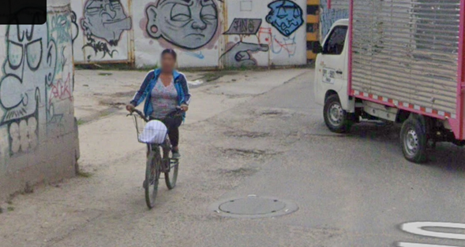
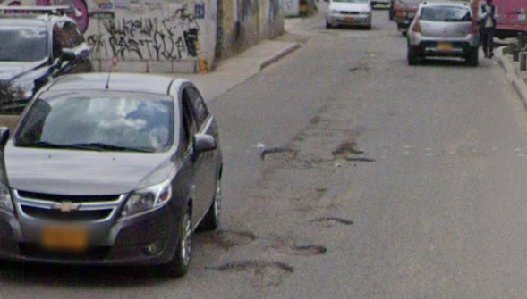
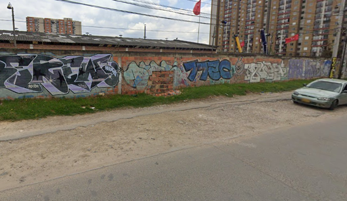

Mapa ubicación estación de monitoreo del aire más cerca al barrio El Vergel
Análisis de la Calidad del Aire en el barrio El Vergel (Kennedy)
El barrio El Vergel, en la localidad de Kennedy, se encuentra en una zona de alta densidad poblacional y con una importante carga vehicular, lo que impacta directamente en la calidad del aire.
Las estaciones de monitoreo más cercanas registran niveles elevados de material particulado (PM10 y PM2.5), lo cual constituye una de las principales problemáticas ambientales y de salud pública en el sector.
Problemáticas del Espacio Público

Huecos en la vía principal
El mal estado de las calles genera riesgos para vehículos y peatones, afectando la movilidad.

Zona sin pavimentar
La falta de pavimentación en algunas calles representa una barrera de accesibilidad, especialmente en temporada de lluvias.

Andén roto y peligroso
El mal estado de los andenes es un riesgo para los peatones, en especial adultos mayores y personas con discapacidad.